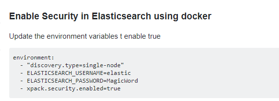

docker运行elasticsearch时增加base auth安全校验

发布于
使用如下所示环境变量，ELASTICSEARCH_USERNAME 表示用户名，ELASTICSEARCH_PASSWORD表示密码。
environment:
- "discovery.type=single-node"
- ELASTICSEARCH_USERNAME=elastic
- ELASTICSEARCH_PASSWORD=MagicWord
- xpack.security.enabled=true
评论
或 匿名发表评论